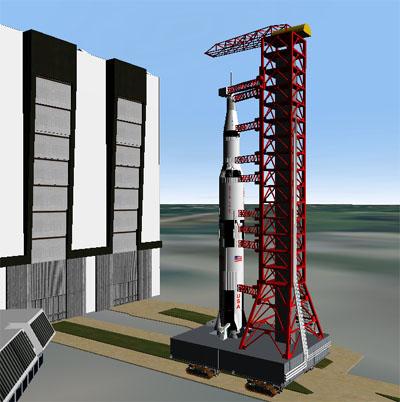
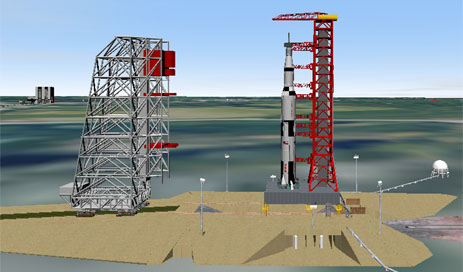

| |
Project Apollo - NASSP simulates not only the Apollo flights but also the assembly of the Saturn V launch vehicle and the rollout to the launch pad. The Saturn 1b or other launch vehicles aren't supported yet. To do a realistic rollout without sinking into the launch pads we use Artlav's great Meshland plugin, which provides collision detection with surface base meshes. Please note that the Meshland integration is still under development, in the next release we plan to bundle it with Project Apollo - NASSP for easy installation, at the moment please follow the instructions below:
That all, now you can try assemby and rollout as explained below. |
 |

The Crawler Transporter (CT) is the most important vessel during rollout and prelaunch. It's used to move the Saturn on the Mobile Launcher (ML) from the VAB to the launch pad (and back, if necessary). The Crawler Transporter is also used to move the Mobile Service Structure (MSS) from it's parking position to the pad and back.
The Crawler Transporter is controlled by the following keys:
| Key | Usage |
|---|---|
| <NUMPAD> 8 | Accelerate |
| <NUMPAD> 5 | Brake |
| <NUMPAD> 4 | Turn left |
| <NUMPAD> 6 | Turn right |
| <NUMPAD> 2 | Change driving direction (only when stopped) |
| <NUMPAD> 1 | Attach/detach ML or MSS (only when stopped) |
Of course you can do the rollout after you assembled the Saturn completely, but you can also start with the rollout directly. To do that please start the "2. Apollo 11 - Rollout" scenario in the "Project Apollo - NASSP\Apollo - Historical Missions\Apollo 11" folder. The scenario starts one day before launch, the crawler is parking in front of the VAB with the Saturn on the ML inside.
After the rollout the Mobile Service Structure (MSS) was moved to the pad for final works on the Saturn and moved back to parking position before launch. In Project Apollo - NASSP it's not necessary for the launch to use the MSS, but if you want to do it like the real thing, you'll hopefully like it.
|
 |
The automatic prelaunch sequence of the ML and the LUT (Launch Umbilical Tower) starts 3 hours before launch with moving the Hammerhead Crane to launch position.
That's all for the moment, if you have questions or need help using Meshland, please post at the Project Apollo forum here: http://www.ibiblio.org/mscorbit/mscforum.
 |
|